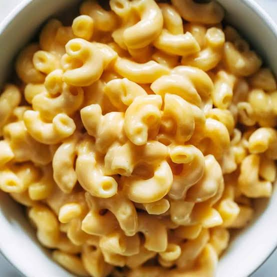

Macaroni and Cheese

An American Classic
This perfect baked macaroni cheese recipe comes with a creamy cheese sauce, a hint of mustard and uses leftover French stick for its crunchy topping.
Suitable for meal prep or a week night dinner!
Ingredients
- 50g baguette, cut into small chunks
- 2 tbsp butter, plus 1 tbsp melted
- 350g spiral or other short pasta
- 1 garlic clove, finely chopped
- 1 tsp English mustard powder
- 3 tbsp plain flour
- 500ml whole milk
- 250g vegetarian mature cheddar, grated
- 50g parmesan (or vegetarian alternative), grated